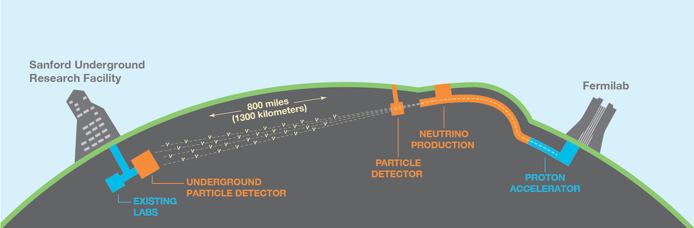

About me
View of Berkeley and San Francisco from the Lawrence Berkeley National Laboratory.
I am a particle physicist currently working at the Lawrence Berkeley National Laboratory as Owen Chamberlain Postdoctoral Fellow.
My research is focused on charged lepton flavor violation (CLFV). I am a member of the Mu2e experiment, whose goal is to search for the conversion of muon into electron. The experiment is currently under development at the Fermi National Accelerator Laboratory (Fermilab).
I also work on the DUNE experiment, the next-generation largest neutrino experiment currently under construction at Fermilab and at the Sanford Underground
Research Laboratory.
Originally from a small town in Apulia, Italy, I moved to Rome where I obtained a Bachelor and a Master in Physics at Sapienza – University of Rome.
View of the INFN Frascati National Laboratories near Rome.
During my master thesis I developed the prototype of the electromagnetic calorimeter for the Mu2e detector. After the thesis I won a fellowship at the Frascati National Laboratories of the INFN, to continue working on the Mu2e experiment.
I obtained a PhD in Particle Physics in 2019 at the University of Oxford, with a thesis on the search for a low-energy excess of electron neutrinos in the MicroBooNE experiment.
View of the Radcliffe Camera of the University of Oxford.
I enjoy traveling, reading, and eating good Italian food!
Research
DUNE

The Deep Underground Neutrino Experiment (DUNE) is a leading-edge, international experiment for neutrino science and proton decay studies. Discoveries over the past half-century have put neutrinos, the most abundant matter
particles in the universe, in the spotlight for further research into several fundamental questions about the nature of matter and the evolution of the universe — questions that DUNE will seek to answer.
DUNE will consist of two neutrino detectors placed in the world’s most intense neutrino beam. One detector will record particle interactions near the source of the beam, at the Fermi National Accelerator Laboratory
in Batavia, Illinois. A second, much larger, detector will be installed more than a kilometer underground at the Sanford Underground
Research Laboratory in Lead, South Dakota — 1,300 kilometers downstream of the source. These detectors will enable scientists to
search for new subatomic phenomena and potentially transform our understanding of neutrinos and their role in the universe.
I am working on the prototype of one of the detectors, which employes a 3D pixelated charge readout to detect neutrino interactions.
Mu2e

The goal of the Mu2e experiment is to search for the conversion of a muon into an electron. Muons are charged leptons like electrons, but around 200 times heavier and with a mean lifetime of 2.2 μs, which is relatively long if compared with other sub-atomic particles.
First discovered in 1936 while studying cosmic rays, muons can be thought as heavy electrons, since they are not subject to the strong nuclear force. The eventual observation of the conversion of a muon into an electron would be a clear signature of physics beyond the Standard Model.
The Mu2e experiment, currently under development at the Fermi National Accelerator Laboratory, will search for the conversion of a muon into an electron by using an artificial, high-intensity proton beam. It is expected to start acquire data in 2021.
MicroBooNE

Neutrinos are very lightweight particles (their mass is much lower than that of the other known elementary particles) which interact only via the weak subatomic force and gravity. Thus, neutrinos typically pass through normal matter without impediment and they are then very difficult to detect.
During my PhD I worked on the MicroBooNE experiment, a liquid argon time-projection chamber (LArTPC) designed for short-baseline neutrino physics. My research is focused on the appearance of electron neutrinos in the detector. LArTPCs provide extremely detailed pictures of the particles produced in a neutrino interaction and they make possible a broad range of physics measurements.
MicroBooNE is the biggest LArTPC currently active in the world and provides very high-resolution images of the neutrino interactions. The experiment first started collecting neutrino data in October 2015. MicroBooNE will measure low energy neutrino cross sections and investigate the low energy excess events observed by the MiniBooNE experiment.
Resume
Room 050-6026A
Lawrence Berkeley National Laboratory
Berkeley, CA 94720
United States
I am a particle physicist currently at the Lawrence Berkeley National Laboratory as Owen Chamberlain Postdoctoral Fellow.
My research is focused on charged lepton flavor violation and on neutrinos. I am member of the Mu2e and DUNE collaborations.
Research experience
Lawrence Berkeley National Laboratory
9/2019 — today
Owen Chamberlain Postdoctoral Fellow
Development of the Mu2e experiment and study of charged lepton flavor violation. DUNE LArTPC near detector
prototyping and simulation framework development.
Harvard University
4/2019 — 8/2019
Postdoctoral Fellow
Study of neutrino interactions in the MicroBooNE experiment.
Harvard University
9/2017 — 3/2019
Research Fellow
Study of low-energy electron neutrinos in the MicroBooNE experiment.
University of Oxford
9/2016 — 6/2017
Tutor
Laboratory assistant of the Optics course for first-year undergraduate students.
INFN, Laboratori Nazionali di Frascati
2/2015 — 9/2015
Postgraduate Fellow
Technology choice for the electromagnetic calorimeter of the Mu2e experiment.
Fermi National Accelerator Laboratory
7/2013 — 9/2013
Summer intern
Simulation of electronic pile-up in the calorimeter of the Mu2e experiment.
Education
Sapienza University of Rome Bachelor, Physics
2009 — 2012
Advisor: Prof. Paolo Mataloni
Conferences
- PHYSTAT-nu 2019, Status of the MicroBooNE low-energy excess and evaluation of the systematic uncertainties (poster),
CERN, Switzerland, January 2019
- Neutrino 2018, Electron-neutrino reconstruction and selection in the MicroBooNE LArTPC
using the Pandora pattern recognition (poster), Heidelberg, Germany, June 2018
- MASS2018, MicroBooNE status and recent results, Odense, Denmark, May 2018
- APS DPF 2017, Cosmic-ray reconstruction efficiency and detector
performances in the MicroBooNE experiment, Fermilab, United States, July 2017
- NNN 2016, Cosmic-ray reconstruction efficiency with the MicroBooNE detector,
IHEP, Beijing, November 2016
- NuPhys 2015, The Muon Counter System of the MicroBooNE experiment,
Queen Mary University, London, December 2015
Awards
- Owen Chamberlain Postdoctoral Fellow, 2019-2022
- Ermenegildo Zegna Founder’s Scholarship, 2016-2018
- University of Oxford St Catherine’s College Graduate Scholarship, 2016-2018
- INFN Postgraduate Scholarship, 2015
- INFN - Fermilab Summer Student scholarship, 2013
- University College "Lamaro Pozzani" Scholarship, 2009-2014
Contact